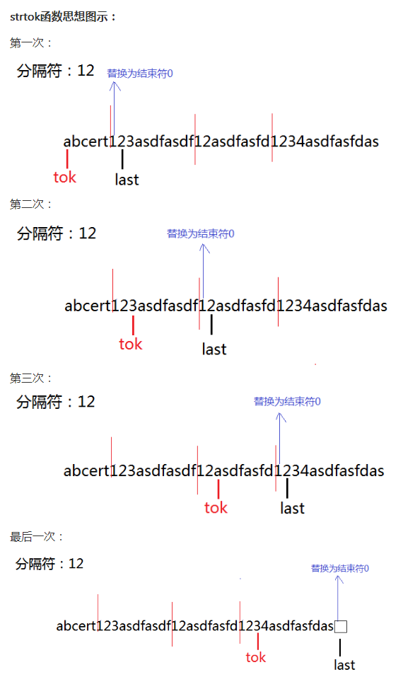

关键字static的作用经常被作为面试题考查。本人在面试微软工程院的时候就曾经遇到过这个问题的考查。 那么，static关键字的含义有哪些呢？现在总结如下：
static可以修饰变量。当static修饰全局变量时，表示该变量的作用域只存在于本文件。其他文件就不能引用。比如：
在a.c文件里定义了2个全局变量：
static int x = 10; int y = 0;
其中x前面有static关键字修饰，而y没有。那么在文件b.c里，如果想引用x,y，那么：
extern int y;//正确 extern int x;//错误
也就是说，x是不能再b.c文件里访问的，但y是可以的。这样做，其实是为了防止模块与模块之间因为全局变量而造成的命名冲突。
当static修饰函数内的局部变量时，表示该变量存储在静态存储区，而不是存储在栈上。因此该变量具有记忆功能。函数每次执行后，它的值都不会丢失。
问题：下面的函数实现在一个数上加一个数，有什么错误？ 如何改正？
int add_n ( int n )
{
static int i = 100;
i += n;
return i;
}
分析：由于i声明为static的类型，它存储在静态存储区，生命期为整个程序执行期间。因此，它的值在每次函数调用之后，都不会丢失。该函数原意是想对n加上100。但是实际执行的是，对n加上的并不是100而是函数上次执行后i的值。 因此，应该把代码做如下改正：
int add_n ( int n )
{
int i = 100;
i += n;
return i;
}
实际上，C库中的strtok()函数就使用了static变量来计算。
char *strtok( char *str1, const char *str2 );
str1为需要分割的字符串，首次传入的是源字符串，后面就是NULL
str2为分隔符字符串，此字符串中的每个字符都是分割符
返回值：如果不存在分隔符，则返回NULL；存在则返回分割出的字符串的首地址，字符串首部不含分隔符，尾部是字符串结束符+余下的带分割的字符串。
注意：此函数是在源字符串中进行分割操作，如不想修改源字符串，最好copy一份。
处理思想：
1、在原字符串中进行分隔，找到第一个匹配的分隔符，将此字符替换为结束符0
2、tok为首个不是分隔符的字符，last为找到的第一个匹配的分隔符字符下一位字符位置（也就是下次循环开始位置）
3、下一次循环开始忽略所有分隔符的字符。找到首个不是分隔符的字符赋值给tokn
/* Copyright (C) 1994 DJ Delorie, see COPYING.DJ for details */
#include <string.h>
char* strtok(char *s, const char *delim)
{
const char *spanp;
int c, sc;
char *tok;
static char *last;
if (s == NULL && (s = last) == NULL)
return (NULL);
/*
* Skip (span) leading delimiters (s += strspn(s, delim), sort of).
* 跳过字符串首部的分隔符
*/
cont:
c = *s++;
for (spanp = delim; (sc = *spanp++) != 0;) {
if (c == sc)
goto cont;
}
/*
*分割符后面没有字符串了
*/
if (c == 0) { /* no non-delimiter characters */
last = NULL;
return (NULL);
}
tok = s - 1; /*分割符后面还有字符串，将tok指向字符串首部（不包括分隔符）*/
/*
* Scan token (scan for delimiters: s += strcspn(s, delim), sort of).
* Note that delim must have one NUL; we stop if we see that, too.
* 循环字符串中的字符，直到找到分隔符或者结束符，并替换成结束符
*/
for (;;) {
c = *s++;
spanp = delim;
/*
*判断字符串中的某字符是否是分割符中的字符
*如果是，将分隔符替换成结束符并返回tok；
*如果不是，继续判断下一个字符
*/
do {
if ((sc = *spanp++) == c) {
if (c == 0)
s = NULL;
else
s[-1] = 0;
last = s;
return (tok);
}
} while (sc != 0);
}
/* NOTREACHED */
}
// 哈希实现
char* strtok_r(char* string_org,const char* demial) {
static unsigned char* last;
unsigned char* str;
const unsigned char* ctrl = (const unsigned char*)demial;
unsigned char map[32];
int count;
for (count =0; count <32; count++){
map[count] = 0;
}
do {
map[*ctrl >> 3] |= (1 << (*ctrl & 7));
} while (*ctrl++);
if (string_org){
str = (unsigned char*)string_org;
} else{
str = last;
}
while ((map[*str >> 3] & (1 << (*str & 7))) && *str){
str++;
}
string_org = (char*)str;
for (;*str; str++){
if ( map[*str >> 3] & (1 << (*str & 7))){
*str++ = '\0';
break;
}
}
last =str;
if (string_org == (char*)str){
return NULL;
}else{
return string_org;
}
}
现在来看一道Intel的面试题：
问题：A.c 和B.c两个c文件中使用了两个相同名字的static变量，编译的时候会不会有问题？这两个static变量会保存到哪里（栈还是堆或者其他的）? 答案：用关键字static的修饰的全局变量，表明这个变量仅在本文件（模块）中有意义，不会影响其他模块。这两个static变量保存在静态存储区。
关于更多static修饰变量的介绍，您还可以参考：《变量类型，作用域，存储空间，生命周期 》
static关键字还可以修饰函数。在C语言里，static修饰函数，与static修饰全局变量作用是一样的，表示该函数仅在本文件中使用，其他文件中的函数不能调用此函数。其他文件中不能引用该函数，以避免名字冲突。
在C++里，static修饰函数和变量，表示该函数或变量属于该C++类的静态成员，为所有对象共同所有。在类中，静态成员可以实现多个对象之间的数据共享，并且使用静态数据成员还不会破坏隐藏的原则，即保证了安全性。因此，静态成员是类的所有对象中共享的成员，而不是某个对象的成员。 使用静态数据成员可以节省内存，因为它是所有对象所公有的，因此，对多个对象来说，静态数据成员只存储一处，供所有对象共用。
静态数据成员的值对每个对象都是一样，但它的值是可以更新的。只要对静态数据成员的值更新一次，保证所有对象存取更新后的相同的值，这样可以提高时间效率。
静态成员函数不接受隐含的this自变量。所以，它就无法访问自己类的非静态成员。
本页共45段，1634个字符，3673 Byte(字节)